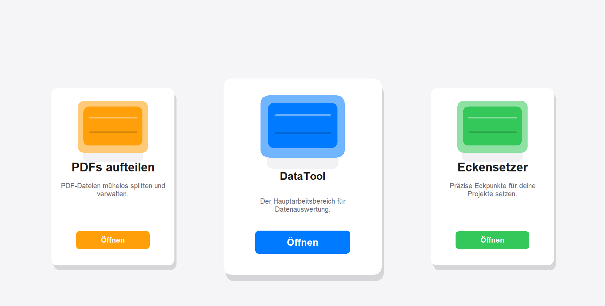
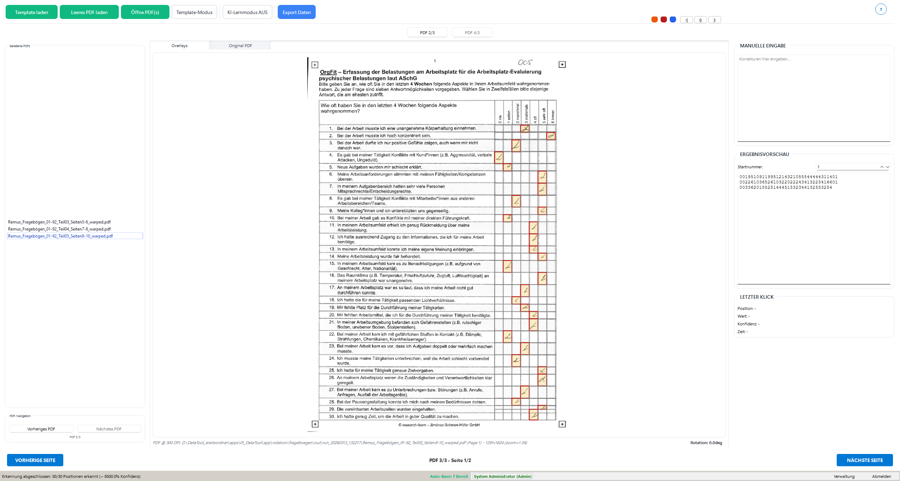
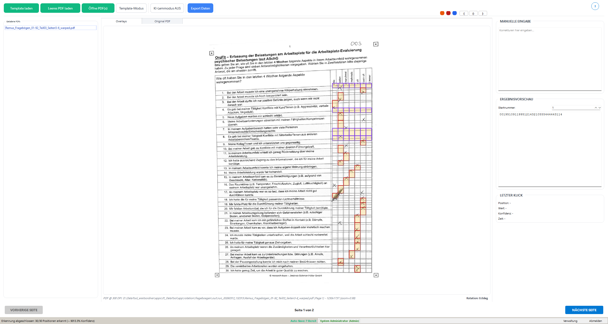

PDF Toolkit · Schritt 1
Dokumente passend vorbereiten.
Bevor die eigentliche Auswertung beginnt, bringen Sie alle Dokumente in die benötigte Form und Reihenfolge.AufteilenEntfernenZusammenführen
Erleben Sie den tatsächlichen Ablauf – von der Vorbereitung des leeren Fragebogens bis zum geprüften Export.
Tour starten
PDF Toolkit · Schritt 1
PDF Toolkit · Schritt 2
PDF Toolkit · Schritt 3
Eckensetzer · Schritt 1
Eckensetzer · Schritt 2
Eckensetzer · Schritt 3
Die Kernanwendung




DataTool · Schritt 1
DataTool · Schritt 2
DataTool · Schritt 3
DataTool · Schritt 4
DataTool · Schritt 5
DataTool · Schritt 6
DataTool Komplettpaket